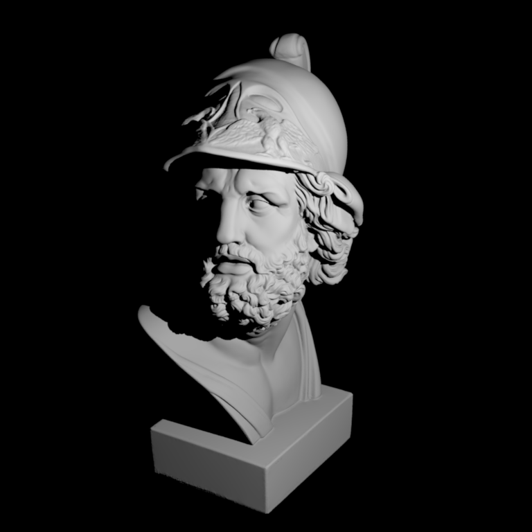
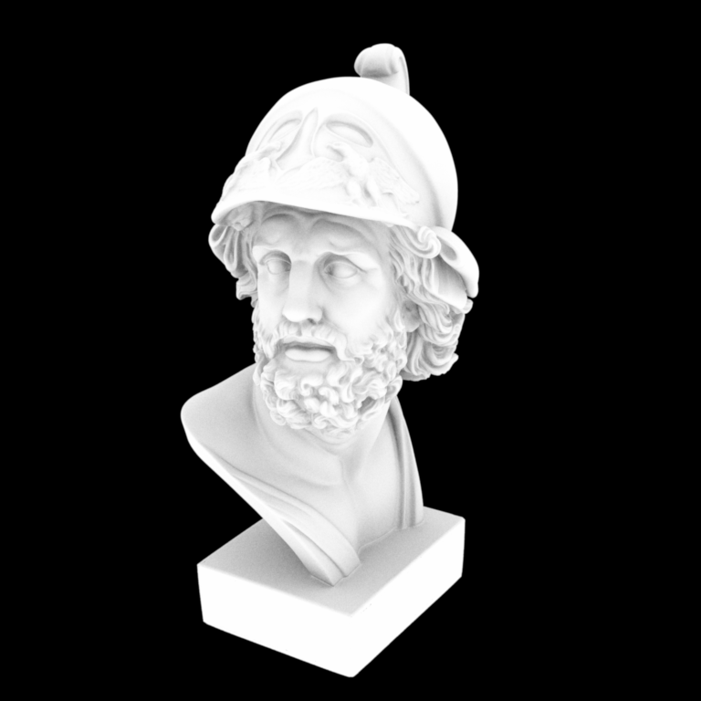

**Homework 3**
Student name:
Sciper number:
Monte Carlo Sampling (60 pts)
=============================
For each of these sections, don't forget to include necessary derivations as well as screenshots of passing $\chi^2$ tests from the warptest executable.
Tent
----
Uniform disk
------------
Uniform sphere
--------------
Uniform hemisphere
------------------
Cosine hemisphere
-----------------
Beckmann distribution
---------------------
Two simple rendering algorithms (40 pts)
========================================
Point lights
------------
Ajax bust illuminated by a point light source:

Note: Nori automatically generates both a `.exr` as well as an sRGB tonemapped `.png` image of your rendering that should directly used for the comparison above. Please still commit both versions in your `results/homework-X` folder.
Ambient occlusion
-----------------
Ajax bust rendered using ambient occlusion:

Note: Nori automatically generates both a `.exr` as well as an sRGB tonemapped `.png` image of your rendering that should directly used for the comparison above. Please still commit both versions in your `results/homework-X` folder.
Feedback
========
We would appreciate any comments or criticism to improve the projects in future years--naturally, this part will not be graded. Examples of information that is useful to us includes:
* How much time did you spend on the assignment? How was it divided between designing, coding, and testing?
* What advice should we have given you before you started?
* What was hard or surprising about the assignment?
* What did you like or dislike? What else would you change?